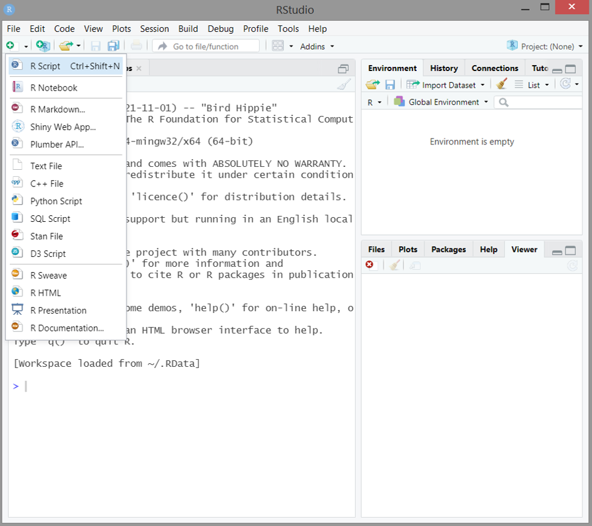
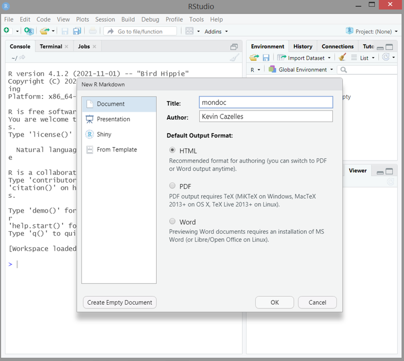
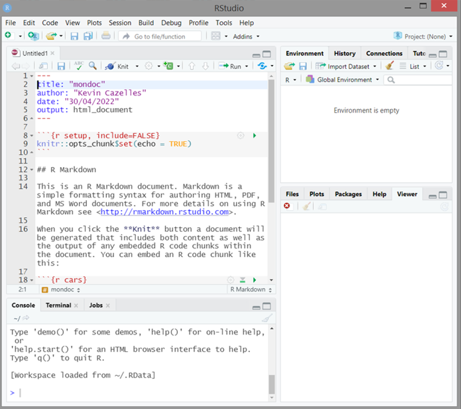

2.2 Exercices
Cette section est une introduction à R Markdown qui passe en revue différents aspects techniques nécessaires à la bonne compréhension et utilisation de la biblothèque rmarkdown.
Cette introduction est divisée en deux parties. Vous ferez la première partie maintenant, au module 2, et la deuxième partie dans le section Exercices du module 3.
La bibliothèque rmarkdown permet de créer des documents de formats variés (dont HTML, PDF et Word) avec un contenu R dynamique. C’est-à-dire des documents qui intègrent des morceaux de code R et ce qu’ils génèrent (p. ex. des figures et tableaux). Le code source de ce site web est lui-même un exemple d’application de cette bibliothèque!
R Markdown n’est pas un outil spécifique à la visualisation de données spatiales. Toutefois, puisqu’il constitue un outil d’édition, de visualisation et de diffusion fort pratique, nous l’utiliserons dans ce cours. En particulier, les évaluations devront être remises dans un fichier R Markdown .Rmd.
À la fin de cette introduction vous saurez:
- Décrire en quoi consiste R Markdown;
- Décrire les liens entre R, Markdown et Pandoc;
- Utiliser la syntaxe Pandoc Markdown de base;
- Créer des documents dynamiques avec la bibliothèque
rmarkdown.
Cette introduction à RMarkdown a été rédigée par Kevin Cazelles, collobateur clé à réalisation de ce cours. Kevin est un chercheur en écologie computationnelle et fervent utilisateur des outils pour la science ouverte. Allez voir ses travaux sur son site https://kevcaz.insileco.io/ et son profil GitHub https://github.com/KevCaz.
2.2.1 Introduction à R Markdown
Bénéfices de R Markdown
Dans de nombreux milieux professionnels, à des fins de communication diverses, sont produits régulièrement des documents intégrant des analyses de données (tableaux, figures, tests statistiques, etc.). Pour créer de tels documents, il faut être en mesure de manipuler des données, de les analyser et de créer des figures pour les intégrer dans le document final. R est un langage de programmation qui répond à ces besoins avec un grand nombre de bibliothèques qui permettent de manipuler et traiter un spectre très large de données et de les visualiser efficacement.
Le langage R offre également la possibilité
d’intégrer code et les produits du code (résultats de tests, tableaux, figures,
etc.) directement dans un document qui est alors qualifié de dynamique. La
bibliothèque la plus utilisée pour créer des documents dynamiques est
rmarkdown. En effet, elle permet l’intégration de R dans un document écrit avec Markdown et qui peut
être converti en de nombreux formats de document (dont PDF, Word, HTML).
Qu’est-ce que Markdown?
Markdown est un langage de balisage léger. C’est-à-dire un langage dans lequel on peut utiliser des ensembles de caractères spécifiques (des balises) pour délimiter une zone de texte pour laquelle un formatage associé (e.g. text en gras) est appliqué.
Markdown est aujourd’hui très répandu sur Internet. La syntaxe originale de Markdown est le fruit du travail de John Gruber9, programmeur, bloggeur et baladodiffuseur de Philadelphie en collaboration avec Aaron Swartz10 (lui même connu pour avoir participer à la création de Creative Commons et son tragique destin qui fut l’objet d’un film).
Sur le site de John Gruber, “daringfireball”, Markdown est décrit depuis décembre 2004 et on peut même y télécharger la version 1.0.1 (voir http://daringfireball.net/projects/markdown). L’idée de départ est simple et élégante : produire un langage léger qui simplifie les balises HTML utilisé par tous les sites Internet. L’idée n’est pas tant de remplacer le HTML mais plutôt d’en augmenter l’efficacité d’écriture et de fait, il est beaucoup plus rapide d’écrire en Markdown qui couvre les opérations de formatage les plus courantes (listes, hyperliens, etc.). Notons qu’il existe d’autres langages qui répondent aux mêmes objectifs, par exemple ReStructuredText11.
Après la publication de Markdown, John Gruber a cessé de travailler sur Markdown12 et d’autres développeurs, sans doute séduits par le langage, ont proposé différentes additions syntaxiques. Il s’agissait surtout de lever certaines limitations tout en préservant l’esprit d’origine. Ci-dessous, en voici une liste non exhaustive de différentes variantes Markdown:
Depuis 2014, CommonMark (https://commonmark.org/) propose une spécification (norme technique) pour Markdown de plus en plus utilisée13. Ceci signifie qu’en allant d’un outil à l’autre qui utilise cette spécification, il n’y a pas de questions à se poser quant à savoir ce qui marche ou non en terme de syntaxe (un problème parfois frustrant quand on utilise plusieurs outils qui utilisent différentes syntaxes Markdown), il suffit de se reporter à la spécification!
Qu’est-ce que Pandoc?
R Markdown (voir http://rmarkdown.rstudio.com)14 utilise la variante Markdown de
Pandoc15.
Pandoc, comme l’indique son site internet (voir http://www.pandoc.org) est un “convertisseur de document universel”.
En une ligne de commande, Pandoc convertit un document d’un format donné en un document d’un autre
format. Par exemple, Pandoc permet de passer d’un fichier .tex (LaTeX) à un
fichier .docx (Word)!
La variante Markdown de Pandoc a été pensé pour rester fidèle à l’esprit originel de Markdown tout en incluant davantage d’éléments communs à différents formats de documents16. Ainsi, un fichier R Markdown pourra être converti dans un grand nombre de formats grâce à l’utilisation de Pandoc.
Dans cette introduction, nous nous concentrerons sur la création de documents en format Word, PDF et
HTML, mais que les possibilités offertes par rmarkdown sont plus vastes (voir la section Ressources du cours dédiée à la documentation R Markdown).
2.2.2 Utiliser un fichier RMarkdown
Organisation générale
Un fichier R Markdown, dont l’extension est .rmd ou .Rmd, un fichier de texte brut qui contient trois types de langage.
Un langage de programmation, R. Le fichier peut contentir des blocs de codes R utilisés pour présenter des opérations R, pour les exécuter, et pour afficher leur résultat. Ces blocs commencent et finissent par trois accents graves (backtick ou backquote en anglais): ` et les trois accents graves ouvrant le bloc sont suivis d’une accolade qui commence par r ou R, par exemple
```{R name, option1, option2} # code R à exécuter ```ou encore
```{r option1} # code R à exécuter ```Ces blocs de code sont intégrés au document grâce aux fonctionnalités de la bibliothèque
knitr17.Un langage de balisage pour l’écriture du document, la variante syntaxique Pandoc de Markdown.
Un langage de sérialisation, YAML, pour personnaliser la mise en page du ou des documents produits. Il s’agit d’une entête (Front Matter en anglais) placée au début du document dans un bloc de trois tirets ( --- ) qui donne des indications sur les sorties à générer.
--- title: "R Notebook" output: html_notebook ---
De plus, la variante syntaxique Pandoc de Markdown inclut les symboles mathématiques TeX18 pour facilité l’écriture, entre autres, des équations. En un sens c’est un quatrième langage que peut contenir un fichier R Markdown!
Une fois le fichier R Markdown créé, il s’agit d’utiliser la fonction R render() pour appeler le fichier. R Markdown générera alors le ou les documents selon le format désiré.
Installer R Markdown
Commençons par installer la bibliothèque rmarkdown:
install.packages('rmarkdown')Pour la production de document PDF, vous aurez besoin d’installer LaTeX. Si vous n’avez pas déjà LaTeX sur votre ordinateur, installer plutôt la bibliothèque tinytex19:
install.packages('tinytex')
tinytex::install_tinytex() # installer TinyTeXCréer un fichier R Markdown
Créer un fichier R Markdown, c’est simplement créer un fichier dont l’extension
est .Rmd ou .rmd, ce qui peut être fait avec n’importe quel éditeur de
texte, ou de code, ou même en ligne de commande20. Dans R Studio, cela peut se faire en
2 clics, comme illustré dans la marche à suivre ci-dessous. L’intérêt d’utiliser R
Studio pour cette opération est que le fichier ainsi créé contient des
indications relatives à l’utilisation du fichier en question.
Première étape : Utilisez l’icône de création de nouveaux fichiers (symbole + dans un cercle vert), et choissez R Markdown dans le menu vertical 
Deuxième étape : Choisissez le format de sortie désiré (HTML, PDF ou Word), précisez le titre du document ainsi que votre nom, puis appuyez sur la touche OK. 
- Un fichier contenant différentes instructions et exemples est généré. Sauvegardez le fichier créé en lui attribuant un nom. 
Spécifier les options YAML
L’entête YAML sert à spécifier différentes propriétés des documents à générer à
partir du fichier .Rmd (par exemple, le titre, la date, les polices de caractères
utilisées, ajout d’une table des matières, etc.) grâce à des gabarits (templates en anglais) utilisés par Pandoc.
Lorsque vous créez un fichier .Rmd avec R Studio, une entête YAML est créée par défaut avec les champs: titre, autrice ou auteur, date et format de la sortie.
---
title: "mondoc"
author: "Kevin Cazelles"
date: "30/04/2022"
output: html_document
---Les champs disponibles dépendent des gabarits utilisés qui sont spécifiques à un format donné, les champs par défaut varient ainsi d’un format à l’autre. Notez qu’il est possible de créer ses propres gabarits et donc d’ajouter autant de champs que désiré.
Un champ donné peut contenir une chaîne de caractères, une date, des chiffres ou encore une liste:
nomduchamp: [élément1, élément2]ou encore
nomduchamp:
- élément1
- élément2On utilise l’indentation pour signifier la hiérarchie entre les différents éléments.
Les commentaires sont introduits par un “#”.
Pour un aperçu assez complet des options YAML utilisables dans un fichier R Markdown, rendez-vous à la dernière page du guide de référence.
Voici quelques exemples de champs valables pour les sorties HTML, PDF et docx:
abstract: le texte d’un résumé apparaissant au début du document produit.description: la description du contenu du fichier. celle-ci n’apparaîtra pas sur le document produit. Utiliser les guillemets pour un texte long ou avec des signes de ponctuation.
Pour un document HTML, plusieurs champs additionnels sont utiles:
theme: le thème Bootstrap21 à utiliser pour l’apparence du document HTML. Les thèmes disponibles sont:default,bootstrap,cerulean,cosmo,darkly,flatly,journal,lumen,paper,readable,sandstone,simplex,spacelab,united, etyeti. Consultez la page de la bibliothèque Bootswatch pour voir à quoi ces thèmes ressemblent.highlight: le style de la coloration syntaxique. Les styles disponibles sont:default,tango,pygments,kate,monochrome,espresso,zenburn,haddock,breezedark, ettextmate. Vous trouverez ici quelques exemples de ces styles.number_sections: numéroter ou non les sections.toc: inclure ou non une table des matières (table of content en anglais).toc_depth: la profondeur de la table, c’est-à-dire, le niveau des titres apparaissant sur la table.toc_float: inclure ou non la table des matières en menu vertical visible à gauche sur le document HTML. Ce champ peut également être spécifié par une liste d’options:collapsed: permettre ou non un menu de type accordéon qui se referme et se déploie.smooth_scroll: colorer ou non le titre d’une section dans le menu lors de la navigation sur la page.
fig_width: la largeur des figures.fig_height: la hauteur des figures.fig_caption: inclure ou non une légende aux figures.
Pour les documents PDF, les champs suivants peuvent être précisés:
fontfamily: la police de caractère.fontsize: la taille des caractères.
Éditer le contenu du fichier R Markdown
Le contenu principal d’un fichier R Markdown contient du texte et des blocs de code R.
Le texte doit suivre la syntaxe Pandoc Markdown. Nous détaillerons cette syntaxe dans la deuxième partie de cette introduction à R Markdown, à la section Exercices du Module 3.
Les blocs de code R sont ce qui distinguent un fichier R Markdown d’un fichier Markdown. La façon dont le code R est intégré au document final est déterminé par une suite de paramètres. Ces paramètres contrôlent, par exemple, si le code est affiché, si le résultat est affiché, la position d’un graphique produit, etc. Nous détaillerons également ces paramètres dans la deuxième partie de cette introduction à R Markdown.
Lorsque vous créer un fichier R Markdown dans RStudio, un exemple est donné par défaut. Cet exemple contient du texte selon la syntaxe Pandoc de Markdown et du code R.
Obtenir le document final
Pour générer le document final à partir du fichier R Markdown, nous utilisons la fonction render() de la bibliothèque rmarkdown.
Il s’agit d’appeler le fichier *.Rmd en spécifiant le chemin vers son répertoire.
render("chemin/ex_Rmardown.rmd")Nous pouvons ajouter l’argument all pour obtenir tous les documents (PDF, HTML, Word) pour lesquels une spécification YAML existe.
render("ex_Rmardown.rmd", "all")Avec RStudio, que nous utilisons dans ce cours, générer le document final peut se faire de façon encore plus simple. Il s’agit d’appuyer sur le bouton Knit en haut à gauche dans le menu horizontal du fichier R Markdown. Vous pouvez aussi choisir le format de la sortie dans le menu déroulant associé au bouton Knit : Knit to PDF, Knit to HTML, ou Knit to Word.
2.2.3 À vous de jouer !
Question 1
Suivez la démarche présentée pour créer un fichier R Markdown en choisissant le format de sortie HTML (rappel). Préciser les champs de l’entête YAML selon les indications données. Ne modifier pas le contenu du fichier. Créer le document final.
a)
---
title: "Bonjour Markdown!"
author: "Votre nom"
date: "La date"
abstract: "Ce document HTML constitue ma première tentative de modifier l'entête YAML d'un document R Markdown"
description: "Eh bien, je pensais que ça serait plus difficile!"
output:
html_document:
theme: yeti
highlight: breezedark
---{kind=link}
b)
---
title: "Document HTML produit avec le thème darkly"
author: "Votre nom"
date: "la date"
output:
html_document:
theme: darkly
toc: true
number_section: true
---{kind=link}
Question 2
Suivez la démarche présentée pour créer un fichier R Markdown en choisissant le format de sortie PDF (rappel). Préciser les champs de l’entête YAML selon les indications données. Ne modifier pas le contenu du fichier. Créer le document final.
---
title: "Mon premier document PDF produit avec R Markdown"
author: "Votre nom"
date: "La date"
abstract: "Résumez toute votre vie depuis votre naissance jusqu'au moment où vous vous êtes incrit dans le cours SCI 1031!"
output:
pdf_document:
fig_width: 3
fig_height: 3
toc: true
number_section: true
---https://en.wikipedia.org/wiki/John_Gruber, consulté le 28 avril 2022.↩︎
https://fr.wikipedia.org/wiki/Aaron_Swartz, consulté le 28 avril 2022.↩︎
https://fr.wikipedia.org/wiki/ReStructuredText, consulté le 28 avril 2022.↩︎
https://blog.codinghorror.com/responsible-open-source-code-parenting/, consulté le le 28 avril 2022.↩︎
Par example Goldmark, https://github.com/yuin/goldmard, un parser Markdown écrit en Go et utilisé par Hugo (un générateur de site très populaire), est compatible avec Common Mark.↩︎
La version 1 n’utilise pas Pandoc.↩︎
Pandoc est d’ailleurs capable de gérer différentes variantes de Markdown.↩︎
Voir https://pandoc.org/MANUAL.html#pandocs-markdown, consulté le 29 avril 2022.↩︎
Voir https://yihui.org/knitr/), consulté le 29 avril 2022.↩︎
Voir https://fr.wikibooks.org/wiki/LaTeX/%C3%89crire_des_math%C3%A9matiques, consulté le 29 avril 2022.↩︎
Voir https://yihui.org/tinytex/, consulté le 29 avril 2022.↩︎
Par example, si vous travaillez dans un environnement Linux, vous pouvez simplement entrer cette commande dans un terminal:
$ echo "---\nauthor: VotreNom \n---" > mondoc.Rmd↩︎Boostrap est une collection d’outils pour le design de page web. Voir: https://fr.wikipedia.org/wiki/Bootstrap_(framework))↩︎